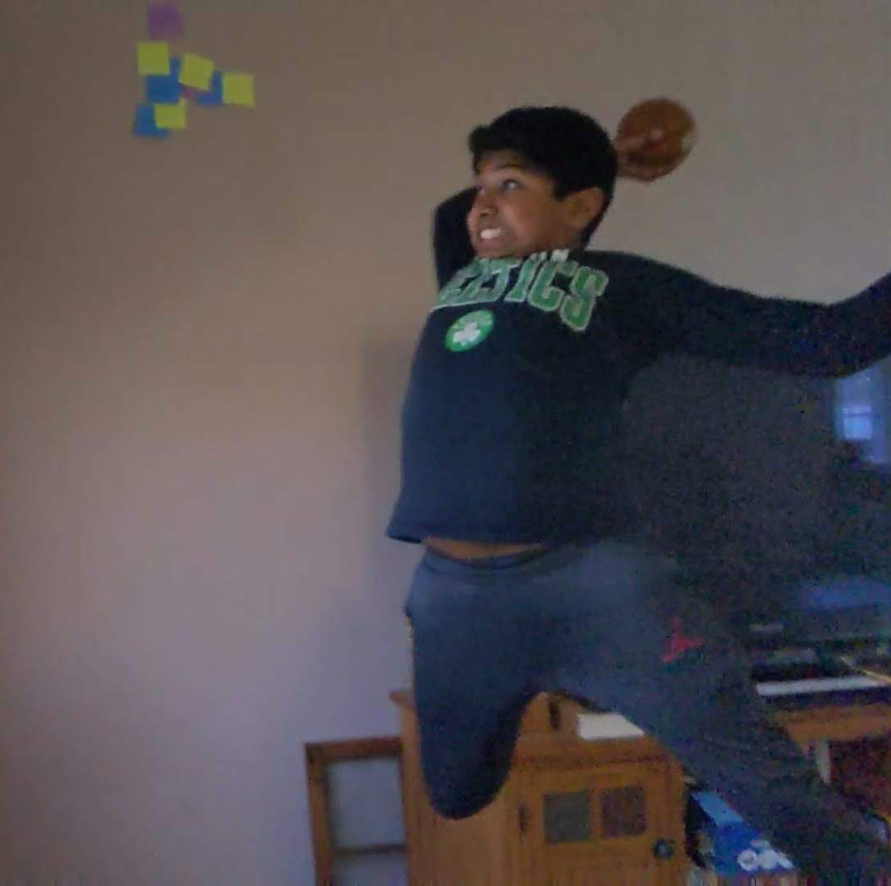
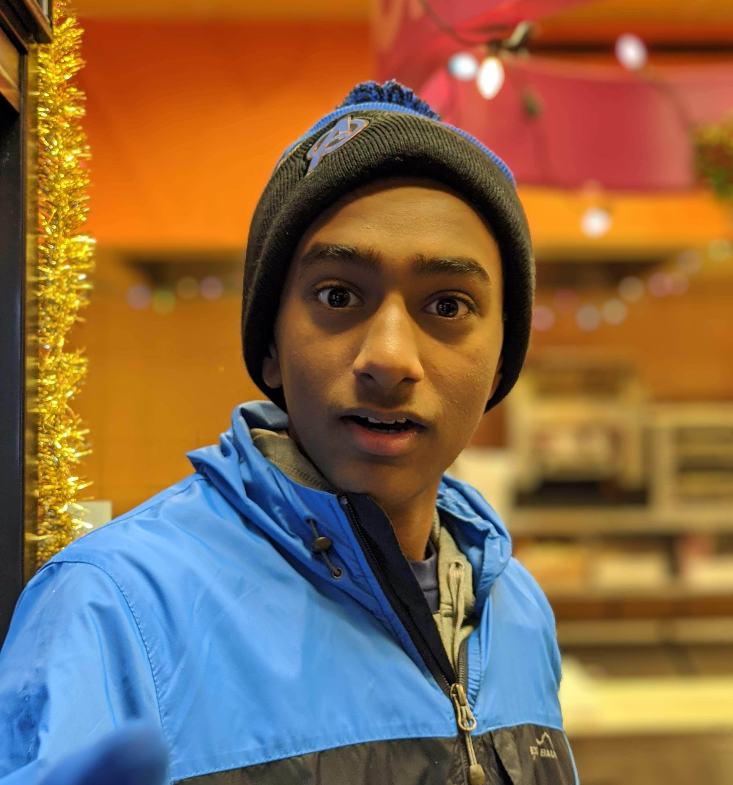

Abhi is an 8th grader at Jonas Clarke Middle School in Lexington MA. He has one several math competitions such as Math Kangaroo. He is currently taking precalculus outside of school. He also teaches at KTBYTE computer science academy. Abhi enjoys playing tennis, playing basketball, participating in math team, and most of all, coding. He also is a lady slayer and has countless bodies. Abhi is famous for winning the most rsm awards in his branch. He is also known state wide for his amazing performance at states in Robotics. He is often referred to as the most talented of the bunch.
Vikram Anantha is an 8th grader at Jonas Clarke Middle School in Lexington MA. Vikram has built inventions, including the MACC, a device that helps non-verbal Autistic people learn words. His invention has won several awards, such as 1st Place in Science Fair, Most Innovative Award at the National Invention Convention, and the 1st Place Topcoder Award at the YIP. Vikram has taught, and created classes in KTBYTE, and has also co-founded HELM, a non-profit that helps people learn more during the Coronavirus Times. and overall likes to help people whenever he can. Vikram enjoys math, art, coding, and Geography. Vikram hopes to do much more in the coming times. He is often told that no one gives a shit.

Chris is thnajfljidjfnkdjasfhnaksdhfbjkuhbjfnkdushf